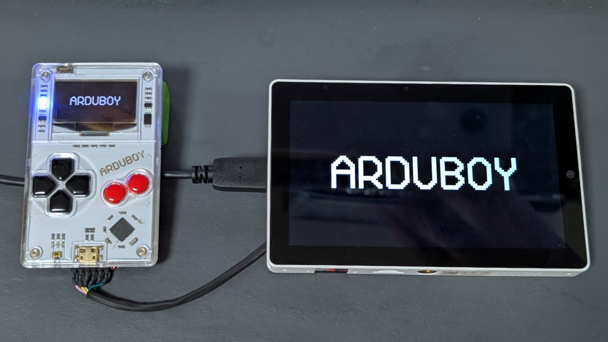
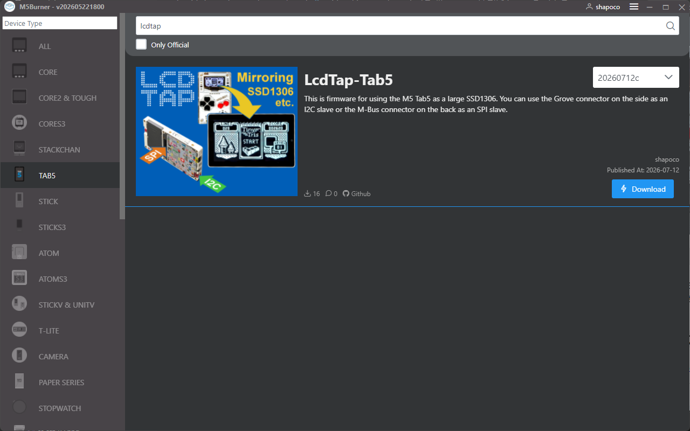
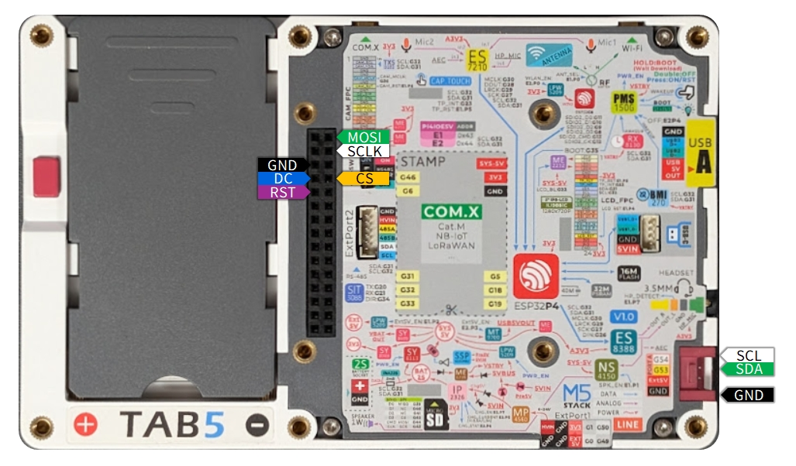

LcdTap: Tab5 をでっかい SSD1306 として使う
2026/07/17 |
記事のソース
LcdTap を M5 Tab5 に組み込んで Tab5 を巨大な SSD1306 として使えるようにしてみました。

LcdTap とは
LcdTap は、 SSD1306、ST7789、ILI9342 などの LCD コントローラや OLED コントローラの動作を エミュレーションして、大きなディスプレイにミラーリングしたり、 キャプチャしたりできるようにするライブラリです。
ファームウェア
ファームウェアは M5Burner でダウンロード・書き込みできます。

ソースコードは GitHub リポジトリ にあります。
ピンアサイン
I2C インタフェースと 4-Line SPI に対応しています。
| Signal | GPIO | コネクタ | 備考 |
|---|---|---|---|
| SPI SCK | G17 | M-Bus | |
| SPI MOSI | G16 | M-Bus | |
| SPI D/C | G18 | M-Bus | |
| SPI CS | G45 | M-Bus | 負論理・内部プルアップ |
| RST | G19 | M-Bus | 負論理・内部プルアップ・SPI/I2C 共用 |
| (reserved) | G52 | M-Bus | 接続禁止 |
| (reserved) | G51 | M-Bus | 接続禁止 |
| I2C SDA | G53 | Grove | 外部プルアップ推奨 |
| I2C SCL | G54 | Grove | 外部プルアップ推奨 |

インタフェースの切り替え
初回起動時は I2C インタフェースが選択されています。インタフェースを切り替えるには次のようにします。
- Tab5 の画面をタップしてキーパッドを表示します。
- Enter キーのアイコン (↵) をタップして OSD メニューを表示します。
- 上下キーで「Interface」を選択して「I2C」または「4-Line SPI」を選択します (8bit-Parallel と 3-Line SPI は未対応です)。
- 「Apply」を選択して Enter キーをタップします。
設定は Tab5 本体に保存されます。
SSD1306 以外のエミュレーション
OSD メニューの「Presets」から SSD1306 以外のコントローラも選択できますが、 Tab5 での動作は不安定なものが多かったです。
関連リンク
-
SNS 投稿